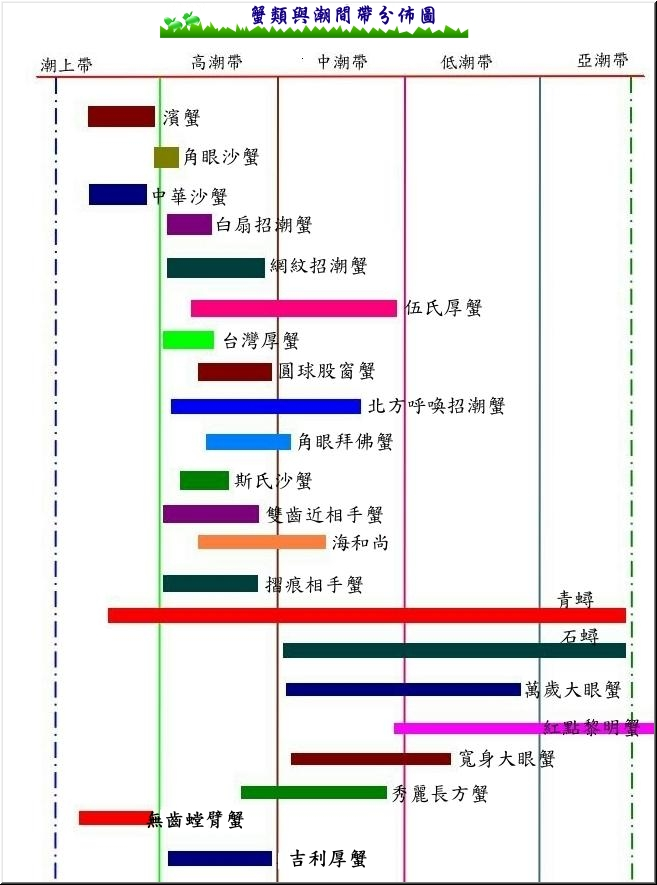
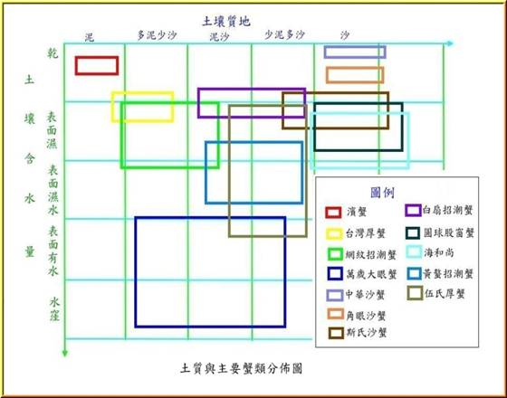

|
挖子尾生態保護區生物探索之旅
一、設定單元的主旨
挖仔尾自然保留區是淡水河潮間帶，最容易觀察蟹類生態的地區，面積約三十餘公頃，多年的調查發現有蟹類種類繁多、貝類約十種以上種、植物水筆子外，還有約四十種
以上的沙地植物與河口的特有植物，還有鳥類與河口濕地特有的生物。由於地勢平坦、濕地廣大是個非常適合學生生態調查的地方。能把鄉土的生態環境多做研究與瞭解，學生透過實地的觀察與研究，以瞭解河口生態的特殊性及對環境的影響，使學生接近自然、瞭解自然、熱愛自然。
二、構成單元的想法
(一)
挖子尾生態保護區位於淡水河口的潮間帶濕地生態應融入教學課程。
(二)
讓每位學生能多瞭解潮間帶的特色，使學生能更愛自然界的生物。
(三)
由實地的觀察與研究河口的生態特性。
(四)
觀察紅樹林的生態環境及其他河口濕地植物、沙地植物。
(五)
觀察河口濕地的生態特性。
(六)
由觀察和研究中瞭解河口潮間帶各種動物的生長、繁殖、環境的特性。
三、單元目標
(一)
水筆子的花、種子、葉、根、傳播方式及生長的環境的特性。
(二)
海濱植物的種類、及根、莖、葉、種子繁殖、生長的特性。
(三)
海濱植物的生長特性及分佈。
(四)
河口蟹類的生長、覓食、繁殖、洞口、活動的特性與分佈的範圍。
(五)
河口濕地的其他生物的種類及其特性。
(六)
紅樹林在河口生態的重要性。
(七)
河口生態族群與群落的關係。
(八)
河口生態面臨哪一些生存上的危機。
(九)
瞭解河口生態的重要性，使學生能夠更珍惜河口生態保護區。
四、教材內容的關聯性
|
1種子的發牙與
成長
2.族群與群落
3.魚 |
|
1.挖子尾生態調查水筆子、蟹類、鳥類、貝類、
魚類、及其他河口生物的研究
|
|
1.環境與我們的生
活。
2.環境污染。
|
五、教學的準備
(一)教學前準備
1.讓學生收集有關河口濕地的動物，如蟹類、貝類、鳥類及其他生物的相關的資料以引起學習動
機。
2.觀賞河口生態有關的影片，河口的潮間帶世界、淡水河紅樹林、河口的蟹類等。
3.教師實地觀察挖子尾河口濕地與沙地的動植物，並記錄特性，繪製分佈圖，並拍攝成幻燈片以便
利教學活動的進行。
4.規劃戶外教學的內容。
5.規劃戶外教教學的活動地點與流程。
6.設計戶外教學的學習單。
(二)教具
1.錄影帶、河口的潮間帶的世界、淡水河口的紅樹林河口的濕地生態。
2.自製河口生態動植物的幻燈片。
六、教學活動概要
活動前的資料收集與影片的觀賞
|
1.收集紅樹林的生態相關資料，能對河口的生態
初步的瞭解，並引起學習動機。
2.觀賞錄影帶、幻燈片加深對河口生態的認識。
3.寫觀賞後的學習單。
|
活動一
觀察水筆子
|
1.用手摸水筆子
2.用鼻子聞一聞水筆子的葉、花的味道。
3.觀察水筆子的樹幹的顏色。
4.觀察水筆子的根有什麼特別的地方。
5.觀察水筆子的葉的形狀與厚度。
6.觀察水筆子生長在河口的哪地區。
7.觀察水筆子對河口濕地的重要性。 |
活動二
追逐蟹兒、看誰跑的快
|
1.尋找各種蟹類的蹤跡。
2.學習個種蟹類的步形方式。
3.找一找各種蟹類的洞口有何不同。
4.觀察各種蟹類的身體各部份的特性。
5.觀察各種蟹類的分佈。
6.觀察各種蟹類的視覺與聽覺。 |
活動三
河口濕地、沙地上找各種植物
|
1.到沙地或濕地找一找各種植物。
2.觀察各種植物的生長環境特性。
3.觀察各種植物的根、莖、葉、花、種子、繁殖
方式有何不同的地方。
4.觀察沙地植物的葉與花和一般的陸生植物有何
不同的地方。
5.觀察濕地植物的根有何特別的地方。
6.觀察沙地植物為何生長的比較低矮。
7.觀察沙地植物必須克服嚴苛的生長環境。
|
活動四
尋尋覓覓找寶貝
|
1.尋找河口濕地上可以看見哪一些鳥類。
2.尋找河口濕地上可以看見哪一些魚類。
3.尋找河口濕地上可以看見哪一些貝類。
4.尋找河口濕地上可以看見哪一些生物。
|
活動五 心得與回饋
|
1.在本次的活動中你發現沙灘或紅樹林中有很多
垃圾你認為要如何處理？
2.把你本活動所觀察到的動植物，完成食物網或食
物鏈圖。
3.由你的觀察中你發現紅樹林在河口生態上的重要
性。
|
七、活動內容
活動前的資料收集與相關影片的心觀賞
|
活動說明 |
指導的要點及注意事項 |
|
1.收集有關河口生態的各種資料。
2.並發表收集的心得分組討論。
3.觀賞老師所拍攝的投影片教學，初步了解挖仔尾的生態。
3.觀賞錄影帶淡水河的紅樹林河
口潮間帶的生物世界招潮蟹。
|
1.可由圖書館或其他的書籍中找到有關河口生態的資料，並提供有關書籍的名稱如紅樹林導遊(大樹)、台灣河口植物種類。
2.設計有關的學習單便利學生能找到重要的資料。
3.教師必須先行挖子尾做實地的調查紅樹林的分佈、蟹類、濕地的植物、沙地的植物、鳥類、魚類、貝類、及其他可能發現的生物。(詳細的資料請看附件說明)
4.設計觀賞幻燈片與錄影帶的學習單並將重點記錄下以便在戶外教時可以使用，學生到戶口外教學前對河口生態有初步的認識。
|
活動一
觀察水筆子(時間30分鐘)
|
活
動
內
容 |
指導要點與注意事項
|
|
1.用手摸一摸水筆子的葉、花、莖、根、胚軸的感覺？
2.聞一聞花與葉的味道？
3.觀察水筆子的根有什麼特別的地方？
4.觀察水筆子的樹幹是什麼顏色？
5.觀察水筆子的葉子的形狀和厚度、葉序？
6.摸一摸水筆子生長的土壤的感覺是沙何種質地的土壤？
7.觀察水筆子生長在河口潮間帶的哪一位置？
8.觀察水筆子的成長的過程？
9.觀察水筆子的生長區內有何種蟹類、魚類、貝類、鳥類及其他的生物？
10.觀察水筆子的四周各種動蟹類是否比其他地區多？
11.想一想你所觀察到的水筆子在河口生態中的重要性？
|
注意的事項：
1.講解活動的範圍，以小組為單位活動
能相互討論 ，相互協助，有突發的事件可以相互的照顧，並能即時的通告老師。
2.水筆子的四季變化，六、七月份時開
花，八、九月份長出小的胚軸，十一
、十二月份胚軸長約10公分、三、四月份胚軸長約20到25公分，四月中胚軸開始掉落。
3.要觀察水筆子的花在五、六月份最佳，要觀察水筆子的胚軸則在十月到次年的四月。
4.計算好漲退潮的時間，以免到遇到滿潮時不易觀察。最好在退潮五分至漲潮二分為佳。
5.觀察水筆仔時，請勿摘取樹葉、花、或胚軸。
6.水筆子的生長區土壤有一些是在泥濘
地上，注意安全，並穿著雨鞋、不要光著腳以免被樹枝或其他利物割傷。
指導要點：
1.
水筆子的林內以隱蟹為主、樹葉上有玉蜀螺、樹幹上有藤壺生長。
2.
水筆子的四處是各種動物生長密度最多的地區，有白扇招潮蟹，網紋招潮蟹、伍氏厚蟹、海和尚、彈塗魚、海虫等生物。水筆子在河口生態中是非常重要的生產者。
水筆仔的生長區有許多的藻類，必須要用顯微鏡才能觀察到。 |
活動二、追逐蟹兒、看誰跑的快
(活動時間60分鐘)
|
活
動
內
容 |
指導要點與注意事項 |
|
1.在5—10公尺外觀察蟹的覓食的動作與族群的互動。
2.走入蟹蘱的棲息地，請學生蹲下來，大家靜止不動觀察蟹類的出洞活動
。
3.尋找各種蟹類的洞口，觀察各種蟹類的泥糞、洞口的大小、形狀。
|
1.一般的蟹類的視覺反應約5到20公尺之間，不同蟹類有不同的反應距離。
蟹
種
反應的距離
隱蟹
5—7公尺.
白扇招潮蟹
5—7公尺
網紋招潮蟹
７—10公尺
北方呼喚潮蟹
10—15公尺
海和尚
15—20公尺
伍氏厚蟹
10—15公尺
萬歲大眼蟹
5—7公尺
眼球股窗蟹
20公尺
斯氏沙蟹
20—25公尺
角眼沙蟹為夜行性的蟹種
2.
一般而言蟹類受到刺激後，首先會快速的奔跑至洞口觀望，當人再更接近時再迅速的入洞。每一種蟹類的回復覓食的時間都不同，以白扇招潮蟹最短約3---5分鐘，其他的蟹種約在5分鐘以上，其中以沙蟹科最久一般在20分鐘以上，所以觀察時以白扇招潮蟹為主，以免浪費太多的觀察時間。
3.每一種蟹類的洞口大小、形狀、泥糞不相同可以由洞口大小、形狀、泥糞來分別各種蟹類。
蟹
種
洞口大小(公分)
形狀
泥糞
隱蟹
1.5 –3.5
扁平
扇形
白扇招潮蟹
0.5---1.5
圓
放射球狀
網紋招潮蟹
1.0---3.0
圓
煙囪狀
北方呼喚潮蟹
1.2---3.0
圓
大塊泥糞
海和尚
0.5---1.5
圓
帶狀泥糞
伍氏厚蟹
1.5---4.5
扁平
長條扇形
萬歲大眼蟹
1.0---2.0
非常扁平
長條狀
眼球股窗蟹
0.5---1.5 圓
放射大球
斯氏沙蟹
1.0----3.5
有點扁
大塊狀
角眼沙蟹
2.5----5.0 園略扁
長條扇形
|
|
活
動
內
容 |
指導要點與注意事項 |
|
4.觀察各種蟹類的步行方式與動作的快慢？
5.觀察各種蟹類的棲息地有什麼不同的地方？
|
5.蟹類中的步行方式略有不同，這和蟹類的背甲的形狀，
蟹種有關。背甲是圓柱狀如(招潮蟹科)網紋、白扇、北方呼喚招潮蟹只能橫的行動、動作不快。背甲是方形(方形蟹科)可以橫或斜行。動作不快。海和尚背甲是圓形，可以各個方相行走，但動作非常的慢。沙蟹科是河口蟹類跑的最快的，跑步時提高第四步足，只用前三對步足跑步，動作十分的迅速。
5.各種蟹類的棲息地在不同的潮間帶

各種蟹類的棲息在不同的土質

|
|
活
動
內
容 |
指導的要點與注意的事項 |
|
6.觀察各種蟹類的體
長與顏色？
7.觀察是公蟹還有母
蟹？
8.觀察蟹類為何不停的在洞口跑進跑出？
9.蟹類用什麼方法回
到自己的洞蟹中？
|
6.挖掘蟹洞要十分的細心，避免傷到蟹類。抓蟹的時候四指略微彎曲成凹狀，將蟹放在手中觀察，蟹就不會跑走，但斯氏沙蟹、角眼沙蟹屬肉食性蟹類會夾人，放在小容器中觀察，以免被咬傷。觀察完後請迅速放置原棲息地，以免蟹類使死亡或受傷，愛護所有的生物。挖掘完的洞口請你填平。
7.蟹的性別很容易分辨招潮蟹科公蟹一螯大一螯小。其他的蟹種要觀察腹部的鰓片。
8.蟹類是以鰓呼吸所以不能離開水份太久，必須每隔
回到洞蟹中補充水份。
9.根據研究蟹類的眼睛只能感覺到光量度的變化，無法
看見實際的影像，所以蟹類回洞的方法可能是利用太陽光角度做為定位的方向。
|
活動三
、剪剪貼貼找植物(活動時間60分)
|
活
動
內
容
|
指導要點與注意的事項
|
|
1.到沙地或濕地找一找有幾種不同的植物？
2.觀察各種植物的生長環境特性，土質，水份、有機質等？
3.觀察各種植物的根、莖、葉、花、種子、繁殖方式有何不同的地方？
4.觀察沙地植物的葉與花和一般的陸生植物有何不同的地方？
5.觀察濕地植物的根有何特別的地方？
6.觀察沙地植物為何生長的比較低矮？
7.觀察沙地植物必須克服嚴苛的生長環
境？
8.觀察許多的植物你認為哪一種植長的
最特別？特別的地方在哪裡？
9.把你所發現的植物剪一小片貼在學習單
|
1.
挖子尾生態保護區約有植物四十餘種，有河口濕地植物、沙地植物、和一般耐旱植物。
. |
活動四
尋尋覓覓找寶貝(活動時間 30分鐘)
|
活
動
內
容 |
|
|
1.找一找河口濕地上可以
看見哪一些鳥類？
2.找一找河口濕地上可以
看見哪一些魚類？
3.找一找河口濕地上可以
看見哪一些貝類？
4.找一找河口濕地上可以
看見哪一些生物？
|
1.河口的鳥類非常的多，有一些是留鳥如
白鷺絲、有一些是候鳥一般以秋季冬季
較多。
2.河口濕地上最常見的魚類以彈塗魚、花跳最多，漲潮時在河水的表層會發現豆仔魚整群的活動。
3..河口的貝類分佈在不同的區域。
低潮線沙地----
蛤，赤嘴蛤等。
中高潮線-----燒酒螺
岩石上--------
玉蜀螺
紅樹上-------
玉蜀螺
4.河口的濕地上只要你細心的尋找還可以
發現沙虫，蝦猴、岩石河堤上的海蟑螂
等。 |
活動五
心得與回饋
|
活
動
內
容 |
|
|
1.在本次的活動中你發現沙灘或
紅樹林中有很多垃圾你認為要
如何處理？
2.把你本活動所觀察到的動植物
，完成食物網或食物鏈圖？
3.由你的觀察中你發現紅樹林在
河口生態上的重要性？ |
1.
挖子為尾的河口生態保護區內到處都是垃圾，如何處理這些垃圾？這些垃圾是從何處漂來的？
2.
把所觀察到的動植物、畫成食物往圖。
蟹類 貝類
魚類
水筆子 其他生物
鳥類
3.
水筆仔在河口生態中的重要性有防止土壤的流失，減少土壤中的鹽份，提供動物的棲息地，增加土壤有機質，提供動物的食物，穩定河口的土壤等。生態學上說：沒有紅樹林就沒有
蟹類與其他的生物。
|
八、試教評估
自然科的教學中以讓學生親自的觀察與研究，讓學生能由實地的觀察與研究，所得知識能使學生深刻的記在腦海中，並能加深學習的興趣。把自然課帶到戶外上，這是每一位學生的最愛，讓自然課本不在只限定課本的知識，而是重視觀察、分析。
(一)、學生能由觀察中學習到河口生態的特性。
1.親自觸摸到水筆子的、根、莖、葉、胚軸對與水筆子有深刻的了解，水筆子生長在濕地上對於生態環境的影響，了解水筆子，更能愛護水筆子的生態。河口的生物非常多，學生平時只能在書本或影片中觀賞，能實地的觀察記錄各種生物的特性印象深刻。河口的沙地上的植物種類很多，觀察各種植物的特性，並剪貼在學習單上，以加深印象。
2.提高學生對自然科的學習意願學生很喜愛戶外教學，由戶外教學結合課程內容，使學習不再只是限定在課本內容，能把課本與實際結合。
(二)、教學中所可能發生的問題
1.戶外教學前必須要讓學生有準備，對河口生態的動植物有初步的了解，實地觀察時學生會問不停。
2.老師必須對河口生態有充分的了解，以免學生一問問題就答不出。
3.在教學中時時注意學生的安全，以免發生意外。所有的活動都能在你的掌握之中。
4.在挖子尾的生態保護區四季有不同的變化，在教學上也應注意。
5.在沙地上做活動天氣炎熱，記得讓學生多帶開水。
(四)遵守研究的原則
為了尊重生態保護區的潮間帶的生物
，避免潮間帶生物的損傷，
保持潮間帶生物的完整性，訂定以下的幾個研究的原則。
1.除非有研究必要，不做挖掘，而以觀察生物習性與行為為主。
2.所採集的生物盡快的研究與記錄，並放回原棲息地。
3.看到潮間帶生物密集區，特別小心通過，以必免傷害生物。
4.離開保護區時，只留下腳印，不能帶走任何潮間帶的生物。
|